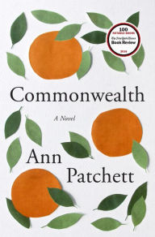

Another Brooklyn
Jacqueline Woodson

Commonwealth
Ann Patchett
Today Will Be Different
Maria Semple
Prince Lestat and the Realms of Atlantis
Anne Rice
The Underground Railroad
Colson Whitehead

A Gentleman in Moscow
Amor Towles
Homegoing: A Novel
Yaa Gyuasi
Fantastic Beasts and Where to Find Them
J.K. Rowling
Swing Time
Zadie Smith
Wildly in the Dark
Tyler Knott Gregson

Bitter Sweet Love
Michael Faudet

Milk and Honey
Rupi Kaur

Book of Longing
Leonard Cohen

Selected Poems: 1968-2014
Paul Muldoon

The Conference of the Birds
Attar

The Beauty
Jane Hirshfield